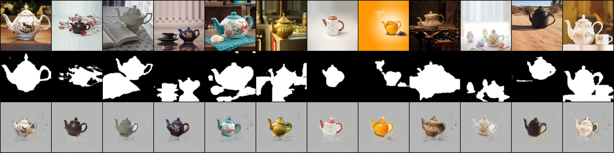
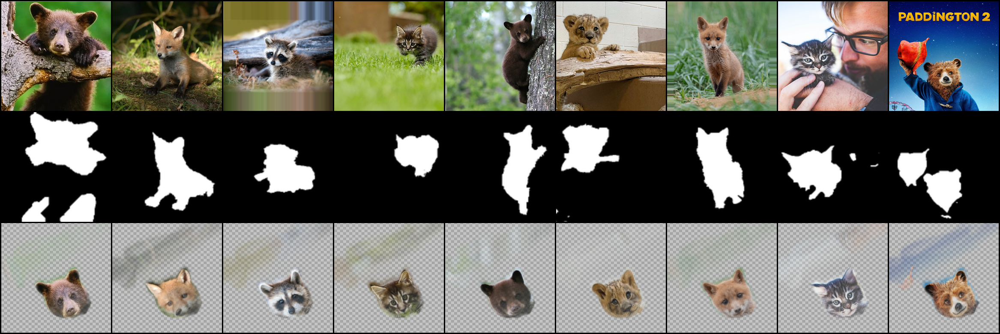
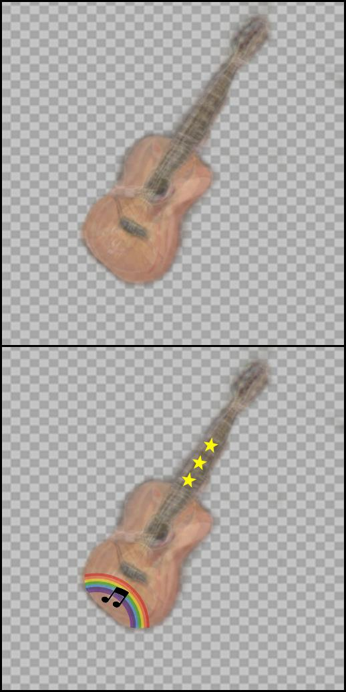

Neural Congealing: Aligning Images to a Joint Semantic Atlas
Supplementary Material
- Neural Congealing Results (Section 4, Figure 3 and 6)
- Editing Results (Section 4.1, Figures 1 and 5)
- Videos
- Limitations (Section 5, Figure 9)
We recommend watching all images in full screen. Click on the images for seeing them in full scale.
Neural Congealing Results
Sample results on several sets of images (part of which are shown in Fig. 3). We show the input images, input saliency masks (overlay) and congealed results, alongside the average image in atlas space, the atlas saliency and the atlas keys (PCA visualization, channels 2-4). Note the accurate alignment across the sets, even in cases with large variations in appearance, shape, pose and domain.
| "Butterflies" Image Set (input images, input saliencies and congealed images) | Atlas visualization |
|---|---|
| "Guitars" Image Set (input images, input saliencies and congealed images) | Atlas visualization |
|---|---|
| "Ducks" Image Set (input images, input saliencies and congealed images) | Atlas visualization |
|---|---|
| "Mugs" Image Set (input images, input saliencies and congealed images) | Atlas visualization |
|---|---|
| "Art Cats" Image Set (input images, input saliencies and congealed images) | Atlas visualization |
|---|---|
| "Mugs2" Image Set (input images, input saliencies and congealed images) | Atlas visualization |
|---|---|
| "Mix Animals" Image Set (input images, input saliencies and congealed images) | Atlas visualization |
|---|---|
| "Mix Cats" Image Set (input images, input saliencies and congealed images) | Atlas visualization |
|---|---|
| "Tea Pots" Image Set (input images, input saliencies and congealed images) | Atlas visualization |
|---|---|
|  |
| "Owls" Image Set (input images, input saliencies and congealed images) | Atlas visualization |
|---|---|
| "Mix Animals 2" Image Set (input images, input saliencies and congealed images) | Atlas visualization |
|---|---|
| "Squirrels" Image Set (input images, input saliencies and congealed images) | Atlas visualization |
|---|---|
| "Baby Animals" Image Set (input images, input saliencies and congealed images) | Atlas visualization |
|---|---|
|  |
| "Mugs Subset" Image Set (input images, input saliencies and congealed images) | Atlas visualization |
|---|---|
Editing Results
Once we have the atlas representation, we can use the average image of all congealed images as a template for editing. Then, the edit in the atlas space is automatically propagated back to all original images. One can also apply an edit on one of the images and propagate it to all the rest by passing through the atlas space. Note that the edits are mapped correctly and accurately to the same semantic parts in all images, under significant variation in scale, pose and appearance.
| "Butterflies" Image Set | Average image in atlas space |
|---|---|

|
| "Mugs" Image Set | Average image in atlas space |
|---|---|
| "Mix Cats" Image Set | Average image in atlas space |
|---|---|
| "Mugs2" Image Set | Average image in atlas space |
|---|---|
| "Mix Animals 2" Image Set (eyes in edit taken from here) | Average image in atlas space |
|---|---|
| "Tea Pots" Image Set | Average image in atlas space |
|---|---|
| "Ducks" Image Set | Average image in atlas space |
|---|---|
| "Guitars" Image Set | Average image in atlas space |
|---|---|
|  |
Videos
We train a model on five sampled frames from the video, together with four augmentations for each frame, and use the trained model to obtain the mappings of the rest of the video's frames. We then apply an edit in the atlas space and propagate it to the entire video.
"Cat"
| Left to Right: Original Video, Our Result, GANgealing Result [1] |
|---|
| Our Training Set | Our trained average image in atlas space |
|---|---|
For each of the following videos, we choose representative frames in order to train a model, and use the trained model to obtain the mappings of the rest of the video's frames. We then apply an edit in the atlas space and propagate it to the entire video.
"Wild Cat"
| Original Video and Our Result |
|---|
| Our Training Set | Our trained average image in atlas space |
|---|---|
"Dog"
| Original Video and Our Result (edit taken from here) |
|---|
| Our Training Set | Our trained average image in atlas space |
|---|---|
"Tiger"
| Original Video and Our Result |
|---|
| Our Training Set | Our trained average image in atlas space |
|---|---|

|
Limitations
We show examples for limitations of our method (Sec. 5 in the main paper). For each set, we show the original images together with the final alignment, and the atlas visualization (average image in atlas space, atlas saliency and atlas keys (PCA visualization)).
Symmetric Objects under Large Rotations
The following set contains an image with a large rotation relative to the rest of the images, where the common object is symmetric. Since the same semantic parts have similar DINO-ViT features, such cases may converge incorrectly due to symmetry, as in this example, where the left eye and nose of the leftmost image are aligned to the right eye and nose of the rest of the images.
| Image Set (input images, input saliencies and congealed images) | Atlas visualization |
|---|---|
Multiple Objects
We show examples of two sets where some images contain two instances of the shared mode (two dogs). Notice that in the first set, the multiple object images hold nearly the majority of the set. In contrast, once another image of a single instance is added, the model is able to converge to a single dog in one of the images. In general, our method is not designed to align images depicting more than one instance of the shared mode.
| Image Set (input images, input saliencies and congealed images) | Atlas visualization |
|---|---|
| Image Set (input images, input saliencies and congealed images) | Atlas visualization |
|---|---|
References
[1] William Peebles, Jun-Yan Zhu, Richard Zhang, Antonio Torralba, Alexei Efros and Eli Shechtman. GAN-Supervised Dense Visual Alignment, CVPR 2022.
Code for edit propagation and generating videos is based on the code from GANgealing.